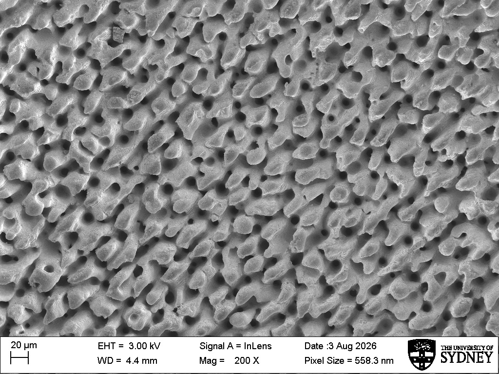

Superhydrophobic and Infused Surfaces
Nanowrinkled Teflon Surfaces
I fabricate hierarchically wrinkled Teflon AF surfaces by depositing a thin fluoropolymer coating onto a heat-shrinkable substrate and thermally annealing the coated material. Shrinkage of the underlying polymer compresses the comparatively rigid Teflon AF film, spontaneously generating interconnected wrinkles from nanometre to micrometre scales. The resulting surfaces provide controllable architectures for investigating superhydrophobicity, lubricant infusion, interfacial gas retention, slip, and drag reduction.

The method was developed in the Neto Research Group, where hierarchical Teflon AF surfaces were reported to reach water contact angles of approximately 172°, contact-angle hysteresis of about 2°, and roll-off angles below 5°. The thermally induced wrinkling process also bonds the coating strongly to its substrate, producing surfaces with useful mechanical robustness and potential for scalable self-cleaning and drag-reducing applications. For more information on the method, read this work: Durable Superhydrophobic Surfaces via Spontaneous Wrinkling of Teflon AF
In my research, these wrinkled substrates serve as both superhydrophobic surfaces and frameworks for lubricant infusion. I fabricate the surfaces, assess their morphology using scanning electron microscopy and atomic force microscopy, measure their wetting behaviour, and evaluate how their manufactured architecture affects interfacial gas or lubricant retention, hydrodynamic slip, drag reduction, and degradation under sustained flow. Previous work from the Neto Research Group showed that nanobubbles nucleating on lubricant-infused Teflon wrinkles can produce effective slip substantially greater than expected from the lubricant layer alone, motivating closer examination of the connection between surface structure, gas availability, lubricant condition, and flow response. Read more here: Nanobubbles explain the large slip observed on lubricant-infused surfaces
Laser-Textured Stainless-Steel Surfaces
I also characterise and test micro- and nanotextured stainless-steel surfaces produced by ultrashort-pulse laser processing at the University of Rostock. Unlike polymeric wrinkled substrates, these surfaces introduce deterministic structures directly into an engineering metal, providing a valuable platform for investigating how texture geometry, surface chemistry, gas retention, wettability, and durability influence performance under flow.

The laser-textured stainless-steel specimens used in this research were manufactured by collaborators in the LaserSurf group at the Chair of Microfluidics, University of Rostock, led by Dr.-Ing. Georg Schnell. The group specialises in ultrashort-pulse laser processing, laser-induced surface functionalisation, and the relationship between structured-surface topography, wetting, tribology, adhesion, and technical performance. Visit the LaserSurf research page or Dr Georg Schnell’s profile.
Ultrashort-pulse laser processing can directly generate deterministic microfeatures and self-organised nanoscale structures on metallic surfaces while limiting bulk thermal damage. By controlling the laser scanning strategy and energy input, the process can produce structures ranging from fine periodic ripples to larger grooves, spikes, holes, and hierarchical textures. These features can modify wettability, adhesion, friction, wear, and biofilm formation without requiring the surface geometry to be added as a separate polymer layer.
In our collaborative work, the textured stainless-steel surfaces provide mechanically robust and industrially relevant counterparts to nanowrinkled Teflon AF substrates. I use microscopy, wettability measurements, interfacial characterisation, and controlled flow experiments to examine how laser-defined texture geometry influences gas or lubricant retention, slip, drag, and durability. Comparing polymeric and metallic textures also helps separate the effects of surface geometry, chemistry, material stiffness, and manufacturing route on hydrodynamic performance.
References
- L. R. J. Scarratt, B. S. Hoatson, E. S. Wood, B. S. Hawkett and C. Neto, “Durable Superhydrophobic Surfaces via Spontaneous Wrinkling of Teflon AF,” ACS Applied Materials & Interfaces, 8, 6743–6750, 2016. [Link to the paper]
- C. Vega-Sánchez, S. Peppou-Chapman, L. Zhu and C. Neto, “Nanobubbles explain the large slip observed on lubricant-infused surfaces,” Nature Communications, 13, 351, 2022. [Link to the paper]
- C. Vega-Sánchez and C. Neto, “Slightly Depleted Lubricant-Infused Surfaces Are No Longer Slippery,” Langmuir, 2022. [Link to the paper]
- S. Peppou-Chapman, C. Vega-Sánchez and C. Neto, “Detection of Nanobubbles on Lubricant-Infused Surfaces Using AFM Meniscus Force Measurements,” Langmuir, 2022. [Link to the paper]
Publications
The manuscript is in under preparation for submission to Advanced Materials Science.